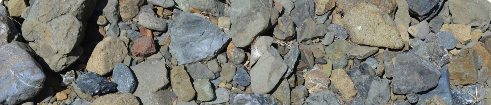
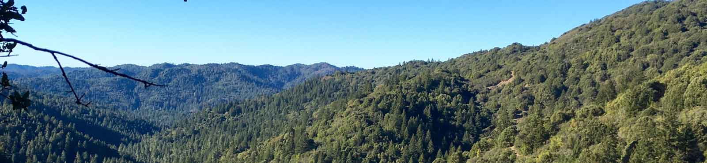

(Photo credit Jesse Hahm)
Publications
-
In-situ nuclear magnetic resonance detection of fracture-held water in variably saturated bedrock. Abstract. Many near-surface environments consist of variably weathered and fractured bedrock, where water can be dynamically stored in different pore environments. The fluxes and residence times of water strongly depend on the configuration of water in pore space and, in particular, the partitioning of water between fractures and the pores of the rock matrix. However, in-situ monitoring methods capable of discriminating between these two reservoirs are lacking. Here, we evaluate low-field borehole nuclear magnetic resonance (NMR) as a method for detecting water storage in fractures. We take advantage of a rising and falling groundwater table at two monitoring sites with instrumented boreholes (one in mudstone and the other in sandstone) to identify the NMR-derived relaxation time associated with the saturated (high water table) and unsaturated (low water table) states of the weathered bedrock. In both rock types, we observe a long relaxation time signal greater than 30 ms at saturation that diminishes or disappears as the bedrock desaturates. These long relaxation times are interpreted to be associated with saturated fractures and indicate that dynamic water storage at both sites occurs within fractures, supporting existing conceptual models. Our preliminary results illustrate the utility of NMR for partitioning between water storage in fractures and the rock matrix in complex weathered bedrock environments.
DM Rempe, LM Schmidt, WJ Hahm. SEG Technical Program Expanded Abstracts, 2018.
(journal website - external link), (pdf) . -
Controls on the distribution and resilience of Quercus garryana: ecophysiological evidence of oak’s water-limitation tolerance. Abstract. The composition of forests in Western North America is changing. The decline in the shade intolerant Oregon white oak (Quercus garryana var. garryana) is attributed to increased competition with the tall-growing Douglas fir (Pseudotsuga menziesii var. menziesii) as a result of widespread fire exclusion. In a warmer, drier future, both species will experience increased water stress, and their distribution will depend on ecophysiological adaptations to water limitation, of which little is known for Q. garryana. Here, we report a suite of new ecophysiological observations to better understand the oak’s water-limitation tolerance, in order to predict its fate in a changing climate. Our study site in the Central Belt of the Franciscan Formation in the Northern California Coast Ranges receives almost no rain in the leaf-on growing season and has limited subsurface water storage capacity. In spite of low pre-dawn water potentials (Ψ; to below -3.0 MPa), mature trees maintained high rates of sapflow. Sapflow continued due to a high Ψ gradient (-1.6 MPa on average) at mid-day between shoots and the subsurface (inferred from pre-dawn measurements) throughout the dry season. Depletion and recharge of stored water in stem tissue and leaves helped to sustain transpiration. Leaves experienced low Ψ (below -4 MPa), and declining hydraulic conductance yet remained functional. Pressure–volume curve analyses revealed that the maintenance of positive turgor pressures in leaves at low Ψ may be attributable to dynamic adjustment due to changes in cell wall elasticity. The turgor loss point may be of limited use in delineating ecophysiological limits to growth and reproduction, as transpiration and apparently normal physiological behavior continued after pre-dawn water potentials declined below turgor loss limits inferred from rehydrated leaves. These findings indicate that Q. garryana is a water-limitation-tolerant tree species that maintains hydraulic function as subsurface water supply and atmospheric demand conditions exceed the ranges at which P. menziesii can operate. These observations can be used to explain Q. garryana’s extant species range and anticipate its likely resilience in a warmer climate.
WJ Hahm, WE Dietrich, TE Dawson. Ecosphere, 2018.
(journal website - external link), (pdf) . -
Drainage from the critical zone: lithologic controls on the persistence and spatial extent of wetted channels during the summer dry season. Abstract. In seasonally dry environments, critical zone drainage provides baseflow that sustains river ecosystems. The extent of wetted channels and magnitude of baseflow throughout the network, however, are rarely documented, and no general theory currently exists enabling the prediction of these key ecosystem properties. We conducted channel surveys in early and late summers of 2012, 2014 and 2015 in four headwater drainage networks (2.8 to 17.0 km2, in the Franciscan Formation of the Eel River (Northern California)), two of which are underlain by the Coastal Belt (argillite and inter‐bedded sandstone) and two of which are underlain by the Central Belt (sheared argillaceous‐matrix, meta‐sedimentary mélange). In all networks, stationary springs controlled the extent of flow. Though surveyed during a period of multi‐year drought, the two adjacent Coastal Belt networks remained flowing throughout late‐summer months, sustained by drainage from groundwater stored in thick weathered rock above fresh, impermeable bedrock. Flow magnitudes, however, decreased and surface flows became increasingly discontinuous, largely due to infiltration into thick gravel deposits on the channel bed. Only 23 km away, in the Central Belt mélange, channel flow ceased early in the summer because the thin critical zone (typically <3 m) stored little water. All late‐summer flowing water initiated from deep‐rooted sandstone blocks and terminated a short distance downslope. Our findings suggest that lithology and critical zone development exert primary controls on wetted channel extent. Given similar annual precipitation, nearby watersheds can have dramatically different summer wetted channel networks that result in fundamentally different aquatic ecosystems.
SM Lovill, WJ Hahm, WE Dietrich. Water Resources Research, 2018.
(journal website - external link), (pdf) . -
Quantification of the seasonal hillslope water storage that does not drive streamflow. Abstract. The relationship between seasonal catchment water storage and discharge is typically nonunique due to water storage that is not directly hydraulically connected to streams. Hydraulically disconnected water volumes are often ecologically and hydrologically important but cannot be explicitly estimated using current storage–discharge techniques. Here, we propose that discharge is explicitly sensitive to changes in only some fraction of seasonally dynamic storage that we call “direct storage,” whereas the remaining storage (“indirect storage”) varies without directly influencing discharge. We use a coupled mass balance and storage–discharge function approach to partition seasonally dynamic storage between these 2 pools in the Northern California Coast Ranges. We find that indirect storage constitutes the vast majority of dynamic catchment storage, even at the wettest times of the year. Indirect storage exhibits lower variability over the course of the wet season (and in successive winter periods) than does direct storage. Predicted indirect storage volumes and dynamics match field observations. Comparison of 2 neighbouring field sites reveals that indirect storage volumes can occur as unsaturated storage held under tension in soils and weathered bedrock and as near‐surface saturated storage that remains on hillslopes (and is eventually evapotranspired). Indirect storage volumes (including moisture in the weathered bedrock) may support plant transpiration, and our method indicates that this important water source could be quantified from precipitation and stream discharge records.
DN Dralle, WJ Hahm, DM Rempe, NJ Karst, SE Thompson, WE Dietrich. Hydrological Processes, 2018.
(journal website - external link), (pdf) . -
Controls on deep critical zone architecture: A historical review and four testable hypotheses. Abstract. The base of Earth's critical zone (CZ) is commonly shielded from study by many meters of overlying rock and regolith. Though deep CZ processes may seem far removed from the surface, they are vital in shaping it, preparing rock for infusion into the biosphere and breaking Earth materials down for transport across landscapes. This special issue highlights outstanding challenges and recent advances of deep CZ research in a series of articles that we introduce here in the context of relevant literature dating back to the 1500s. Building on several contributions to the special issue, we highlight four exciting new hypotheses about factors that drive deep CZ weathering and thus influence the evolution of life‐sustaining CZ architecture. These hypotheses have emerged from recently developed process‐based models of subsurface phenomena including: fracturing related to subsurface stress fields; weathering related to drainage of bedrock under hydraulic head gradients; rock damage from frost cracking due to subsurface temperature gradients; and mineral reactions with reactive fluids in subsurface chemical potential gradients. The models predict distinct patterns of subsurface weathering and CZ thickness that can be compared with observations from drilling, sampling and geophysical imaging. We synthesize the four hypotheses into an overarching conceptual model of fracturing and weathering that occurs as Earth materials are exhumed to the surface across subsurface gradients in stress, hydraulic head, temperature, and chemical potential. We conclude with a call for a coordinated measurement campaign designed to comprehensively test the four hypotheses across a range of climatic, tectonic and geologic conditions.
CS Riebe, WJ Hahm, SL Brantley. Earth Surface Processes and Landforms, 2016.
(journal website - external link), (pdf) . -
Testing for supply-limited and kinetic-limited chemical erosion in field measurements of regolith production and chemical depletion. Abstract. Chemical erosion contributes solutes to oceans, influencing atmospheric CO2 and thus global climate via the greenhouse effect. Quantifying how chemical erosion rates vary with climate and tectonics is therefore vital to understanding feedbacks that have maintained Earth's environment within a habitable range over geologic time. If chemical erosion rates are strongly influenced by the availability of fresh minerals for dissolution, then there should be strong connections between climate, which is modulated by chemical erosion, and tectonic uplift, which supplies fresh minerals to Earth's surface. This condition, referred to as supply‐limited chemical erosion, implies strong tectonic control of chemical erosion rates. It differs from kinetic‐limited chemical erosion, in which dissolution kinetics and thus climatic factors are the dominant regulators of chemical erosion rates. Here we present a statistical method for determining whether chemical erosion of silicate‐rich bedrock is supply limited or kinetic limited, as an approach for revealing the relative importance of tectonics and climate in Earth's silicate weathering thermostat. We applied this method to published data sets of mineral supply rates and regolith chemical depletion and were unable to reject the null hypothesis that chemical erosion is supply limited in 8 of 16 cases. In seven of the remaining eight cases, we found behavior that is closer to supply limited than kinetic limited, suggesting that tectonics may often dominate over climate in regulating chemical erosion rates. However, statistical power analysis shows that new measurements across a wider range of supply rates are needed to help quantify feedbacks between climate and tectonics in Earth's long‐term climatic evolution.
KL Ferrier, CS Riebe, WJ Hahm. Geochemistry, Geophysics, Geosystems, 2016.
(pdf) -
Bedrock composition regulates mountain ecosystems and landscape evolution. Abstract. Earth’s land surface teems with life. Although the distribution of ecosystems is largely explained by temperature and precipitation, vegetation can vary markedly with little variation in climate. Here we explore the role of bedrock in governing the distribution of forest cover across the Sierra Nevada Batholith, California. Our sites span a narrow range of elevations and thus a narrow range in climate. However, land cover varies from Giant Sequoia (Sequoiadendron giganteum), the largest trees on Earth, to vegetation-free swaths that are visible from space. Meanwhile, underlying bedrock spans nearly the entire compositional range of granitic bedrock in the western North American cordillera. We explored connections between lithology and vegetation using measurements of bedrock geochemistry and forest productivity. Tree-canopy cover, a proxy for forest productivity, varies by more than an order of magnitude across our sites, changing abruptly at mapped contacts between plutons and correlating with bedrock concentrations of major and minor elements, including the plant-essential nutrient phosphorus. Nutrient-poor areas that lack vegetation and soil are eroding more than two times slower on average than surrounding, more nutrient-rich, soil-mantled bedrock. This suggests that bedrock geochemistry can influence landscape evolution through an intrinsic limitation on primary productivity. Our results are consistent with widespread bottom-up lithologic control on the distribution and diversity of vegetation in mountainous terrain.
WJ Hahm, CS Riebe, CE Lukens, S Araki. Proceedings of the National Academy of Sciences, 2014.
(article pdf) , (SI PDF) , (SI spreadsheet) , (journal website - external link)
See also: Coevolution of life and landscapes (Commentary). (pdf), (journal website - external link) S Porder. Proceedings of the National Academy of Sciences, 2014. -
Landscape response to tipping points in granite weathering: The case of stepped topography in the Southern Sierra Critical Zone Observatory. Abstract. The dynamics of granitic landscapes are modulated by bimodal weathering, which produces patchy granular soils and expanses of bare rock ranging from meter-scale boulders to mountain-scale domes. We used terrain analysis and with cosmogenic nuclide measurements of erosion rates to quantitatively explore Wahrhaftig’s decades-old hypothesis for the development of “stepped topography” by differential weathering of bare and soil-mantled granite. According to Wahrhaftig’s hypothesis, bare granite weathers slower than soil-mantled granite; thus random erosional exposure of bare rock leads to an alternating sequence of steep, slowly weathering bedrock “steps” and gently sloped, but rapidly weathering, soil-mantled “treads.” Our investigation focused on the terrain surrounding the Southern Sierra Critical Zone Observatory (CZO), which is underlain by granitic bedrock and lies outside the limits of recent glaciation, in the heart of the stepped topography described by Wahrhaftig. Our digital terrain analysis confirms that steep steps often grade into gentle treads, consistent with Wahrhaftig’s hypothesis. However, we observe a mix-and-match of soil and bare rock on treads and steps, contrary to one of the hypothesis’ major underpinnings – that bare rock should be much more common on steps than on treads. Moreover, the data show that bare rock is not as common as expected at step tops; Wahrhaftig’s hypothesis dictates that step tops should act as slowly eroding base levels for the treads above them. The data indicate that, within each landscape class (i.e., the steps and treads), bare rock erodes more slowly than surrounding soil. This suggests that the coupling between soil production and denudation in granitic landscapes harbors a tipping point wherein erosion rates decrease when soils are stripped to bedrock. Although broadly consistent with the differential weathering invoked by Wahrhaftig, the data also show that steps are eroding faster than treads, undermining Wahrhaftig’s explanation for the origins of the steps. The revised interpretation proposed here is that the landscape evolves by back-wearing of steps in addition to differential erosion due to differences in weathering of bare and soil-mantled granite.
BS Jessup, WJ Hahm, SN Miller, JW Kirchner, CS Riebe. Applied Geochemistry Supplement, 2011.
(pdf)

Diversity of rock types in stream sediment of catchment < 5 km2, Franciscan Mélange(photo credit Daniella Rempe)
Recent Abstracts
2018
- Stable isotopes in oaks reveal progressive unexpected shift toward isotopically lighter rock moisture source during summer dry out of the critical zone. WJ Hahm, WE Dietrich, TE Dawson, DM Rempe, DN Dralle. AGU Fall Meeting Abstracts, 2018.
- Trees use deep rock moisture, yet the xylem of their stable isotopes do not fully record this moisture source. J Oshun, DM Rempe, WJ Hahm, AM Donaldson, TE Dawson, IY Fung, WE Dietrich. AGU Fall Meeting Abstracts, 2018.
- Sediment Transport and Morphological Change in a River Meander without Vegetation. R Miao, AD Howard, AB Bryk, WJ Hahm, RME Williams, J Schieber, WE Dietrich. AGU Fall Meeting Abstracts, 2018.
- Estimating plant xylem vulnerability from sap flow data set. Y Lu, WJ Hahm, AG Konings, SE Thompson, X Feng. AGU Fall Meeting Abstracts, 2018.
2017
- Identifying the Dynamic Catchment Storage That Does Not Drive Runoff. D Dralle, WJ Hahm, D Rempe, N Karst, SE Thompson, WE Dietrich. AGU Fall Meeting Abstracts, 2017.
- The role of rock moisture on regulating hydrologic and solute fluxes in the critical zone. DM Rempe, JL Druhan, WJ Hahm, J Wang, C Murphy, S Cargill, WE Dietrich, AK Tune. AGU Fall Meeting Abstracts, 2017.
- Critical Zone structure inferred from multiscale near surface geophysical and hydrological data across hillslopes at the Eel River CZO. SS Lee, DM Rempe, WS Holbrook, L Schmidt, WJ Hahm, WE Dietrich. AGU Fall Meeting Abstracts, 2017.
- Relating runoff generation mechanisms to concentration-discharge relationships in catchments with well-characterized Critical Zone structures and hydrologic dynamics. WJ Hahm, J Wang, JL Druhan, D Rempe, WE Dietrich. AGU Fall Meeting Abstracts, 2017.
- The influence of Critical Zone structure on runoff paths, seasonal water storage, and ecosystem composition. WJ Hahm, WE Dietrich, D Rempe, D Dralle, TE Dawson, S Lovill, A Bryk. AGU Fall Meeting Abstracts, 2017.
- Progressive depletion of stable isotopes recorded in a Mediterranean oak (Q. garryana) as a shallow saturated water source drains, leaving behind tightly held rock moisture. WJ Hahm, WE Dietrich, TE Dawson. Isotopes 2017, Mt. Verità, Ascona, Switzerland.
2016
- Ecohydrological Consequences of Critical Zone Structure in the Franciscan Formation, Northern California Coast Ranges. (pdf) WJ Hahm, WE Dietrich, TE Dawson, SM Lovill, DR Rempe. AGU Fall Meeting, December 2016.
- Comprehensive seismic surveys suggest that subsurface water-holding capacity is secondary to bedrock nutrient content as a regulator of vegetation productivity in the Sierra Nevada Batholith, California. Taylor, Riebe, Dueker, Goulden, Flinchum, Pasquet, Callahan, Hahm, Kiefer, Holbrook. AGU Fall Meeting, December 2016.
2015
- Testing for supply-limited and kinetic-limited chemical erosion in field measurements of regolith production and chemical depletion. KL Ferrier, CS Riebe, WJ Hahm. AGU-CGU Meeting, May 2015.
- The oxidation of landscapes. D Rempe, WJ Hahm, W Dietrich. AGU Fall Meeting, December 2015.
- Drainage from the critical zone: lithologic, aspect, and vegetation controls on the spatial extent of wetted channels during the summer dry seasons. S Lovill, W Dietrich, WJ Hahm. AGU Fall Meeting, December 2015.

Elder Creek Watershed(photo credit Sky Lovill)
Teaching (descriptions from course catalogues/syllabi)
@Berkeley
-
Co-instructor – EPS 3 The Water Planet, Spring 2018
“An overview of the processes that control water supply to natural ecosystems and human civilization. Hydrologic cycle, floods, droughts, groundwater. Patterns of water use, threats to water quality, effects of global climate change on future water supplies. Water issues facing California.” -
Graduate Student Instructor – EPS 117 Geomorphology, Fall 2015 & Fall 2016
“Quantitative examination of landforms, runoff generation, weathering, mechanics of soil erosion by water and wind, mass wasting, glacial and periglacial processes and hillslope evolution.”
@Wyoming
-
Teaching Assistant – GEOL 4610 Structural Geology and Tectonics, Fall 2012
“understanding of deformation of the Earth's lithosphere.” -
Graduate Student Instructor – GEOL 1100 Physical Geology, Spring 2011
"modern concepts of the Earth's physical makeup including minerals and rocks, topography, crustal structure, plate tectonics and processes and forces acting on and within the earth.”
Funding
@Berkeley
My work is primarily funded by the National Science Foundation-supported Eel River Critical Zone Observatory.I have also received the following grants:
- Institute for the Study of Ecological Effects of Climate Impacts, Graduate Student Research Award, 2018
- Carol Baird Fund for Graduate Field Science Award, 2017-2018
- Mildred E. Mathias Graduate Student Research Grant, 2015-16
Press & Outreach
Eel River Critical Zone Observatory Research
- Studying the Eel River Watershed (Video for interactive exhibit at the Lawrence Hall of Science) (external link - Youtube), 2017
- Complex Research Program Moving Ahead at Livermore Woman’s Ranch. (external link) Livermore Independent, 2016. (pdf)
- National Study Taking Place At Livermore Woman’s Ranch. (external link) Livermore Independent, 2015. (pdf)
Southern Sierra Critical Zone Observatory Research
-
Sierra Nevada bedrock shapes vegetation and topography. (pdf) Oleson, T, Earth Magazine, 2014.
- UW Study: Bedrock Influences Forests More Than Previously Believed. (external link) University of Wyoming Press Release, 2014.
- World's Largest Trees Help Explain California Forests' Bald Spots. (external link) Livescience.com article, 2014; Scientific American version: (external link)
- Study Finds Forest Growth Dictated By Bedrock, Not Just Climate. (external link) Wyoming Public Media, 2014.
- Granite bedrock and sequoia forests 'communicate' in the Sierra Nevada. (external link) National Science Foundation, 2014.
- Granite Contributions to the Sierra Nevada. (external link) California Academy of Sciences, 2014.